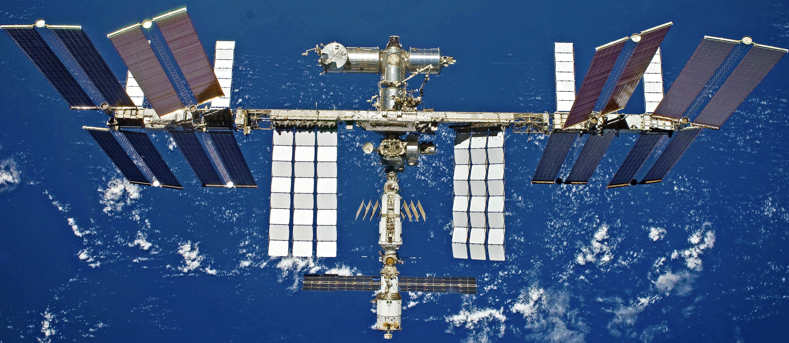

The International Space Station (ISS) is a multinational collaborative project including five participating space agencies: NASA (United States), Roscosmos (Russia), JAXA (Japan), ESA (Europe), and CSA (Canada). The ownership and use of the international space station is governed by intergovernmental treaties and agreements, and the station itself serves as a research laboratory in which experiments are conducted across studies - Astrobiology, Astronomy, Meteorology, Physics, and others.
International Space Station as viewed from Space Shuttle. Source: NASA
The ISS is divided into two sections: the Russian Orbital Segment (ROS) is operated by Russia, while the United States Orbital Segment (USOS) is run by the United States and others. The first ISS component was launched in 1998, and the first long-term residents arrived on November 2, 2000. The station has since been continuously occupied ever since.
The ISS is a modular space station, meaning that certain modules can be added or removed from the existing structure, allowing for flexibility in it's construction. Today, the international space station consists of pressurized habitation modules, structural trusses, solar arrays, thermal radiators, docking ports, and experimental bays and robotic arms. Each piece has gradually been added over more than a decade of spaceflights and crews. The below infographic displays the current structure along with labels detailing several existing modules.
Modular View of the International Space Station. Source: Visually